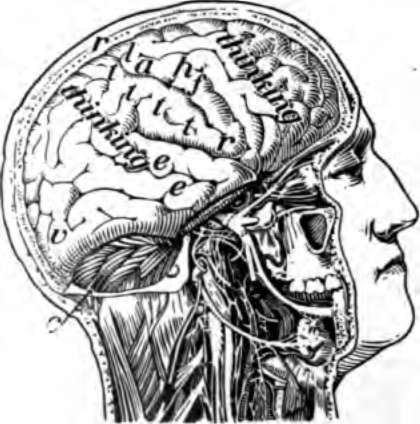

How The Body Is Governed. Continued
Description
This section is from the book "The Human Body And Health", by Alvin Davison. Also available from Amazon: The Human Body and Health.
How The Body Is Governed. Continued
Fig. 116. Diagram of a slice across the spinal cord, showing the roots of a spinal nerve to the arm on the left. The arrows show which way the messages travel. The little circles are the cut ends of fibers extending up and down the cord. Only a few of the thousands of fibers really present are here shown.
Use Of The Sympathetic Nervous System
The nerves of the sympathetic system supply the stomach, intestines, liver, pancreas, heart, lungs, and the muscles in the veins and arteries in all regions of the body. This system acts without our knowledge and cannot be controlled by our wishes. When food goes into the stomach, a message is received by the sympathetic system to make the gastric glands give out juice to digest the food. When, by running, we use up the oxygen in the muscles, it is the sympathetic that tells the heart to beat faster and send more bearing the oxygen for the hungry tissues. When we are hot, the sympathetic system orders the sweat glands to give out sweat to cool the body.
The Spinal Cor
This consists of a bundle of nerve fibers inclosing a column of cell bodies, the outer part of the cord therefore appears white, while the central H-shaped part is gray. The cord is about eighteen inches long and as large in diameter as the little finger. It is joined by 31 pairs of nerves which extend to all parts of the body, except the head.
The spinal cord has two uses. It conducts messages between the brain and the nerves of the arms, legs and trunk. It also acts independently of the brain and causes many of the muscular movements such as are required in walking thoughtlessly or in withdrawing the finger or foot from a sharp tack or burning object. Such performances are spoken of as reflex action.
Fig. 117. Part of the sympathetic 8 system seen from the n, one of the two chief J, if and p, branches to the.
Fig. 118. How reflex action occurs. The pain caused by the tack t, goes up the fiber a, and shifts off to the cell m which sends a message down from the muscle to move and draw away the finger. The message may also go up to the brain and down as shown.
Reflex Action
This is any action of the nervous system without the use of the will. Tickling the foot of the soundest sleeper causes it to be moved, but the brain was asleep and did not act. The cell bodies in the cord aroused by the tickling sent a message to make the muscles move. The squirming of a snake with a mashed head, the jumping of a chicken with its head cut off, and the wriggling of the pieces of a freshly cleaned eel, placed in the hot frying pan, are reflex acts in which the brain has no part.
Reflex action causes the hand stuck with a pin to be withdrawn before the brain can act. The pain travels up the nerve fiber of the arm and around through the spinal cord, exciting the cell bodies there to send a message out to the muscles to withdraw the arm. A fraction of a second later the brain feels the pain. The beating of the heart, breathing, the movements of the stomach or any other activity caused by the sympathetic system is reflex action.
The Brain
The brain almost completely fills the cavity of the cranium. The three main parts are: the cerebrum or great brain, the cerebellum or little brain and the medulla oblongata or stem of the brain, which joins the spinal cord.
The brain, like the spinal cord, is made of both white and gray matter. That is, there are millions of cell bodies with their processes or nerve fibers extending from them and forming a thick, irregular network. The gray matter of the brain is largely on the outside, where it forms a layer an eighth of an inch thick, called the cortex (Fig. 112).
The Cerebrum Or Great Brain
This composes seven eighths of the entire brain. It is divided into halves, named hemispheres, by a deep cleft, the longitudinal fissure, extending from before, backward. The surface of the cerebrum is very uneven, as there are many folds separated away to show the brain, c, cerebellum; l, a, h, and f, part of the cerebrum used in moving muscles; t, used in feeling; e, used in hearing; v, used in seeing by grooves an inch deep. The folds are known as convolutions. They are for the purpose of giving a greater extent to the cortex on which intelligence in animal life in general depends. Fish, frogs, snakes, and birds have no folds in their cerebrum, while rabbits and cats have very few folds. In horses and monkeys, the cerebrum has many folds, but the number is less than in man.
Fig. 119. The upper surface of the brain showing the hemispheres and folds. From a photograph.
Fig. 120. Right half of the skull cut.
Use Of The Cerebrum
The cerebrum is the seat of the mind. It is the thinking organ. Different portions of it have different duties to perform.' The middle part of the cortex is concerned in receiving the messages from the nerves of feeling and in directing the movements of the muscles. The back part is used in seeing, and the part near the ear for hearing. The front part of the cortex, and some other portions of it, help us to think, but how it is done no one knows.
Fig. 121. The brain from the side. From a photograph.
Many nerve fibers connect the cerebrum with the other parts of the brain and with the spinal cord. Most of the nerve fibers from the right side of the cerebrum cross to the opposite side in the stem of the brain, so as to connect with the left half of the spinal cord. In this way the muscles on the left side of the body are controlled by the right half of the brain. Likewise the muscles on the right side of the body are moved by the left half of the brain.
The Cerebellum Or Little Brain And Medulla Oblongata
The cerebellum lies beneath the hind part of the cerebrum. It has many deep cuts and folds on its surface. Its use is not well understood. It is connected with the spinal cord and the other parts of the brain by three bands of nerve fibers on each side. Animals in which it is injured can move the muscles, but they cannot make them work together properly. As a result they tumble about like a drunken man.
The medulla oblongata is the stem of the brain connecting it with a cord. It is the only portion of the brain whose destruction causes immediate death. The cell bodies in the medulla control the breathing and the heart beat, and also have much to do with the action of the alimentary canal.
Paralysis And Apoplexy
Paralysis is lack of power to move the muscles or lack of feeling in any part of the skin. It is caused by an injury to the nerve fibers, or to the cell bodies. If a nerve in the arm is cut or pressed upon hard, the muscle to which it extends cannot be moved. Pressing upon the nerve of the leg sometimes puts the foot to sleep. A pressure of a bone on the spinal cord may cause paralysis.
Paralysis which affects one side of the body may be caused by the clogging of a blood vessel in the brain or the breaking of such a vessel. The blood runs out and forms a clot, which presses on the cell bodies or their fibers which carry messages to move the muscles. When paralysis comes on suddenly and causes unconsciousness it is called apoplexy.
Practical Questions
1. Of what use is the nervous system? 2. Name the three parts of the nervous system. 3. Of what is the gray nerve matter made? 4. What is the form of a complete nerve cell? 5. Of what does a nerve consist? 6. What are the cranial nerves? 7. What are the spinal nerves? 8. How does a sending nerve differ from a receiving nerve? 9. Name some regions supplied by the cranial nerves. 10. How are the spinal nerves joined to the cord? 11. What is supplied by the sympathetic nervous system? 12. Explain how the sympathetic nervous system acts. 13. Describe the spinal cord. 14. Give the uses of the spinal cord. 15. Explain reflex action. 16. Give the parts of the brain. 17. What is the cortex? 18. Describe the cerebrum. 19. What is the use of the cerebrum? 20. Why does the left side of the cerebrum control muscles on the right side of the body? 21. Of what use is the cerebellum? 22. Give some facts about the medulla. 23. What is paralysis? 24. What causes paralysis? 25. What is apoplexy?
Continue to:
- prev: Chapter XVI. How The Body Is Governed
- Table of Contents
- next: Chapter XVII. The Care Of The Nervous System And How Narcotics Affect It